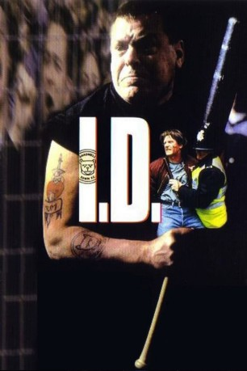
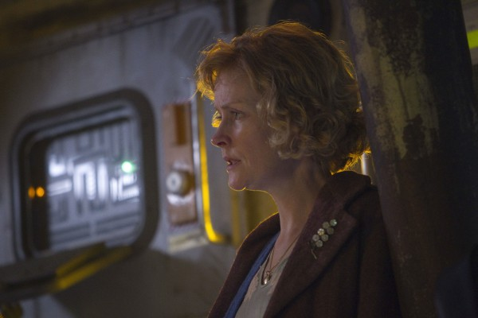
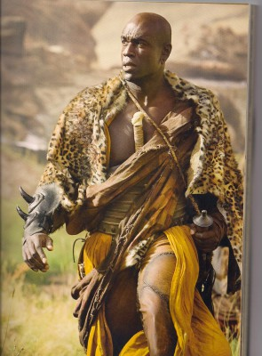
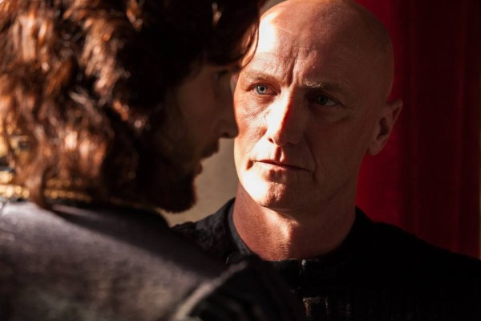

#8594 Undercover
 
 IMDB-Wertung: 7.4 / 10
IMDB-Wertung: 7.4 / 10  Tomatometer: 6
Tomatometer: 6  Metascore: 0
Metascore: 0 
Ehrgeizig und jung - der Polizist John wird mit drei Kollegen in die Hooligan-Szene Londons eingeschleust. Das Undercover-Kommando soll die Drahtzieher der eskalierenden Schlägereien in den Stadien aufspüren. Vor allem durch die riskanten Aktionen Johns gewinnen die Agenten allmählich Anerkennung in einer Szene, in der nur das nächste Spiel, die Schlägereien mit den gegnerischen Fans und ein Gefühl von Zusammengehörigkeit und Stolz zählen. Als sie schließlich sogar in der berüchtigten Stammkneipe der hartgesottenen Hooligans zugelassen werden, steht John kurz davor, selbst zur Schlüsselfigur dieser Szene zu werden. Die Grenze zwischen seiner bürgerlichen Identität und der angenommenen Rolle gerät ins Wanken, die Objekte der Ausforschung werden zu Freunden. Als Johns langjährige Beziehung zur properen Polizistin Marie an diesem Widerspruch zerbricht, scheint es kein zurück mehr zu geben in sein altes Leben. John hat die Grenze überschritten.
Jahr: 1995
Dauer: 107 Minuten
FSK: 12
Land: Deutschland Studio: Ventura FilmTonspuren: DD2.0 - ,
Untertitel:
Auflösung: 1080p (1808x1080) Größe: 7731 MB
Genre: Drama, Krimi
Regisseur: Phil Davis
Drehbuch: Sergio Bizzio
Soundtrack: Will Gregory
Darsteller:
- Reece Dinsdale als John
 Richard Graham als Trevor
Richard Graham als Trevor- Philip Glenister als Charlie
 Warren Clarke als Bob
Warren Clarke als Bob-  Claire Skinner als Marie
 Saskia Reeves als Lynda
Saskia Reeves als Lynda Sean Pertwee als Martin
Sean Pertwee als Martin- Charles De'Ath als Nik
 Lee Ross als Gumbo
Lee Ross als Gumbo- Steve Sweeney als Vinny
 Nick Bartlett als David Daley
Nick Bartlett als David Daley David Schaal als Paul Funnell
David Schaal als Paul Funnell- Peter Blythe als DAC Evans
 Jamie Foreman als Previous Team #2
Jamie Foreman als Previous Team #2 Phil Davis als Duty Sergeant
Phil Davis als Duty Sergeant-  Steve Toussaint als Shadwell Fan
- Thomas Craig als Tyneburn Leader
- Perry Fenwick als Eddie
- Terry Cole als Puff
- Nicholas R. Bailey als Micky
- Alan Cooke als Mynton Mbula
- Ian Redford als DI Schofield
- Mark Burdis als Previous Team #1
- Graham Kemball als Licensing Officer
- Max Smith als Tyneburn Policeman
- Frank Coda als Guiseppe
- Cindy O'Callaghan als Moira
- Michele Winstanley als Stef
- Jacqueline Leonard als Jaq
- Eric Allan als Marie's Dad
- Jean Warren als Marie's Mum
- Michael Brogan als Shadwell Fan
- Jason Moody als Shadwell Fan
-  Paul Brennen als Tyneburn Leader
- Guy Matthewman als Barman
- Nick Bolton als Brief
- Shirley King als Lady on Bus
- Peter Joyce als Neighbour
- Stuart Spear als Policeman (uncredited)
Datei: X:\1995\Undercover (1995, FSK12, 1808x1080).mkv seit 22.03.2018
Festplatte: HD 1992-1995
 Es gibt insgesamt 85 Filme in der Gruppe '1995'
Es gibt insgesamt 85 Filme in der Gruppe '1995'